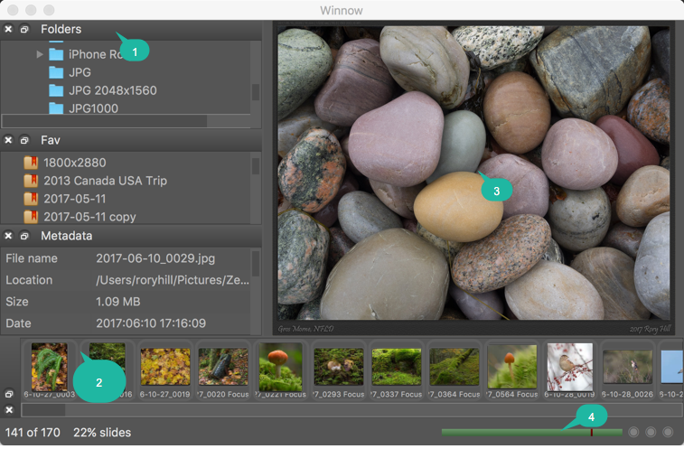
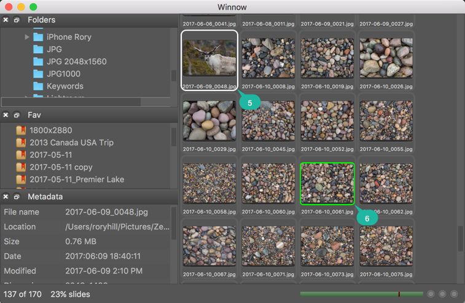

Overview
Winnow is an image viewer designed to quickly view raw files and
jpgs and "winnow" down to the "picks" that are copied to the users
computer from the camera storage medium. It also serves as a
general image viewer and can launch other programs to edit images
and it has a simple slideshow feature.
Quick tips
Winnow is can be highly customized which might leave parts
"stranded" on secondary monitors that are missing in action.
Use the shortcut ⇧⌘W (or in the menu Window > Workspace >
Default workspace) to reset to the default workspace.
Anatomy

